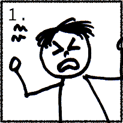
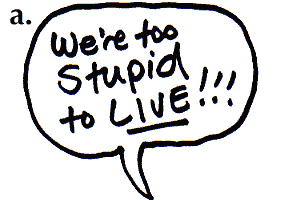
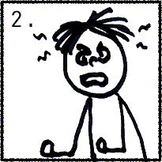
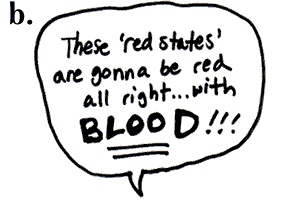
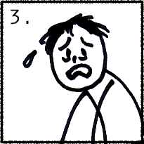
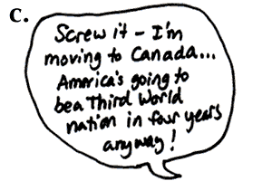
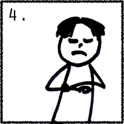
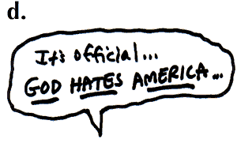

Home Blogs After Hours November 2004
A Day | 11.04.04 | 01:51:19 AM
 |
 |
 |
 |
 |
 |
 |
 |
- - - Comments - - -
COMMENT:
AUTHOR: B²
EMAIL: b@weirdsmobile.com
IP: 66.188.93.14
URL: http://www.weirdsmobile.com/b/
DATE: 11/04/2004 02:02:45 AM
Answers: 1a, 2b, 3d, 4c
-----
COMMENT:
AUTHOR: hannah
EMAIL: misshannah@gmail.com
IP: 141.214.17.5
URL:
DATE: 11/04/2004 08:42:14 AM
It's funny because it's true.
-----
COMMENT:
AUTHOR: Jennifer
EMAIL: jenmoon@pacbell.net
IP: 169.237.72.102
URL: http://fullmoon.typepad.com/chaos
DATE: 11/04/2004 12:54:52 PM
Am I a dork for thinking, "Man, all of these together would make a great animated LiveJournal icon?"
-----
COMMENT:
AUTHOR: Susan
EMAIL: susanpatton@spamcop.net
IP: 66.188.146.124
URL: http://www.livejournal.com/users/tundrababe/
DATE: 11/04/2004 05:51:46 PM
They all seem to match the way they are. :-)
☄
A Day | 11.04.04 | 11:53:23 PM
- - - Comments - - -
COMMENT:
AUTHOR: jadedju
EMAIL: jadedju@ninewire.net
IP: 69.107.106.79
URL: http://jadedju.com
DATE: 11/05/2004 01:23:14 AM
It's obvious that the only answer is to remain friends with them, but spend every single minute of every conversation working on converting them to your point of view. It's really our civic responsibility.
-----
COMMENT:
AUTHOR: Leslie
EMAIL: thynk2much@yahoo.com
IP: 81.31.96.56
URL:
DATE: 11/05/2004 04:15:35 AM
Wow, this is a really difficult question. One side of me gets all New Testament and says "love the sinner, hate the sin". The other side is wrestling that point you made about people dying due to Bush's election.
I suppose that one thing I am keenly aware of is that I don't have all the answers I need in order to judge anyone for their vote. I could be operating on wrong assumptions as much as they are. Although I would classify myself as an extreme pacifist, I know this isn't a view for everyone, and it presents difficult moral questions for which I have no ready answer. So I'm wondering whether my criterion is not "who did you vote for?" but instead "what process did you go through in order to determine your vote?" I just want to see that someone grappled with the hard issues before they voted. I think anyone who does that can be my friend. I had a friend who told me, back in the day, that she was voting the Bush/Quayle ticket because she thought Dan Quayle was hot. Shuddddddddder. That to me is not the kind of person with whom I can maintain a friendship (and I haven't).
>
Friends: depends on how many other things we have in common, on what part of our friendship might or might not involve talking politics. Also depends on how far the friendship has developed when I find this information out. That said, I overwhelmingly attract or am drawn to people who share my political affiliation, almost on an subconscious level.
Lovers: absolutely, no question. My sense of social responsibility is so much a part of who I am, it's inseparable from my romantic and sexual life. C'mon, could you really bone someone who you KNEW voted for Bush? He'd have to be really really really really hot. :) Picturing Helen Sinclair: "No, no, don't speak."
-----
COMMENT:
AUTHOR: Jennifer
EMAIL: jenmoon@pacbell.net
IP: 169.237.72.102
URL: http://fullmoon.typepad.com/chaos
DATE: 11/05/2004 11:10:02 AM
I don't have IRL Republican friends (I have Republican friends online, and even they can't stand Bush), but my mother is a loyal sheeplike Bush supporter who posts pics of him around the house.
I have to go home and visit this weekend, and I do NOT know how I am going to deal with a woman who heard me say that I thought the man was evil and still happily voted for him and thinks he's a good person. And being that she's my mother, I can't cut her off.
-----
COMMENT:
AUTHOR: Susan
EMAIL: susanpatton@spamcop.net
IP: 66.188.146.124
URL: http://www.livejournal.com/users/tundrababe/
DATE: 11/05/2004 11:39:42 PM
I don't know.
Gee, that was helpful.
-----
COMMENT:
AUTHOR: bakiwop
EMAIL: bino1@hotmail.com
IP: 68.114.238.99
URL:
DATE: 11/08/2004 04:00:40 PM
i try to remember that for most people it was an election of "picking between the least worst of two evils" kind of thing, and since it was that, and adding the fact that there sure was a lot of horse manure and misdirection from the parties in the election - most people didn't know what the heck they were doing anyway and so i still try and like them no matter who they voted for.
that, and the people who voted the other way are usually the ones that buy the rounds when we go to the bar.
now, a little off-topic, what do i do about the guy who likes me and wants to be my good friend but constantly says i am going to burn in hell for my view on religion?
-----
COMMENT:
AUTHOR: B²
EMAIL: b@weirdsmobile.com
IP: 66.188.93.14
URL: http://www.weirdsmobile.com/b/
DATE: 11/08/2004 04:19:58 PM
Thanks for the feedback on this issue. It's been helpful -- even "I don't know" because I can at least relate to that feeling. I don't know if there is any morally perfect way to deal with this that doesn't end up hurting people who don't really deserve to be hurt.
Maybe the principle that applies here is "let he who is without sin cast the first stone." I have views and choices that are okay with me but which people I know and love probably consider unethical or immoral. I wouldn't want to lose their friendship -- why should I then deny my friendship to others?
I also have come to believe that there are overriding considerations when it comes to morality and human relationships. Few of us match up exactly in our moral beliefs, but we can't just live in little bubbles of people who agree completely with us. That's the kind of divisive thinking that's ruining the country. When I first started asking this question, I was more on that divisive, "us vs. them" end of the spectrum. But now I believe I am wrong in that belief. Not that I believe that you can change someone's moral or political beliefs against their will, but what I realize is that we can be a presence in their lives that is constant proof that the "other side" are not evil villains, and prevent the kind of demonization that is going on lately. I doubt that any Republican friend of mine will be convinced by any argument I make, but any time they're tempted to rail against those Satanic traitorous liberals, maybe they'll remember me and realize that I am one of those liberals.
bakiwop: I guess my response to that guy would be to say as kindly as possible that, if there is a God, then the destination of your soul after death is between you and Him, and not up to your friend to determine or judge. If he's really your friend then he won't keep hounding you about it.
-----
COMMENT:
AUTHOR: bakiwop
EMAIL: bino1@hotmail.com
IP: 68.114.238.99
URL:
DATE: 11/08/2004 05:31:15 PM
damnit b, i was really hoping you were going to say "slap him upside the head with the biggest bible you could find". but NOOOOOOOOOOO you have to be ADULT about the situation.
-----
COMMENT:
AUTHOR: bakiwop
EMAIL: bino1@hotmail.com
IP: 68.114.238.99
URL:
DATE: 11/08/2004 10:12:45 PM
i've changed my mind. we must get rid of the evil ones we call friends and lovers and acquaintances. for too long they have enjoyed our wit and our wisdom and our love and our friendship thinking to themselves "hey, we may be red-neck, racist, homophobic, bible-thumping pricks, but THAT guy who actually thinks about things still likes us so i must be doing things right and i won't change".
deny them US and they will fold!
mwuhahahahahahahaha!
-----
COMMENT:
AUTHOR: BOB
EMAIL: bob@agirlnamedbob.com
IP: 172.131.169.163
URL: http://agirlnamedbob.com
DATE: 11/08/2004 10:22:45 PM
I really don't know if my mom and I can get past this. I'll just have to pretend that Bush isn't her Messiah. Because how do you talk to someone who only gets their news from Fox and email forwards?
-----
COMMENT:
AUTHOR: Elizabeth
EMAIL: eclare78@hotmail.com
IP: 24.165.108.156
URL: http://teachmetobehave.blogspot.com
DATE: 11/09/2004 09:34:20 PM
It's one of the first questions I find out the answer to. In the first two years of his presidency, I was willing to overlook such a flaw, but now that bad has become evil, being a Bush supporter is a deal-breaker. If you're the sort of person who would vote for Bush, you're not the sort of person I would want to spend time with anyway.
The exception is my parents. I'm still unable to reconcile that one, but I refuse to let politics, no matter how life-and-death, be thicker than blood. Thanksgiving is going to be a hoot.
☄
A Day | 11.08.04 | 01:01:49 PM
Here is a partial list of the constructive, self-improving, obligation-fulfilling activities I have engaged in since this freakin' election crap took over my life:
1)
2)
3)
4)
5)
Mind you, this is not a complete list. But this is no time to rest on my laurels. It's time to get off my butt, roll up my sleeves, play a few hours of Grand Theft Auto: San Andreas and then get to work!
- - - Comments - - -
COMMENT:
AUTHOR: bakiwop
EMAIL: bino1@hotmail.com
IP: 68.114.238.99
URL:
DATE: 11/08/2004 03:56:07 PM
i am especially fond of #2.
☄
A Day | 11.09.04 | 05:29:19 PM
I don't want to talk too much about my novel -- I'd like to just write it, with a minimum of fuss -- but I do want to state for the record that the narrator is a character and not me, and any similarity to persons living or dead yadda yadda yadda. I have no idea whether or not it will be any more successful than my previous attempts to get this started, but this time my intention is to push through it no matter how poorly it goes.
It's something I've been working on in fits and starts for over a year without making much progress, and I'd more or less given up on it when a very wise friend advised me that I maybe ought to just do it already. So I am.
☄
A Day | 11.10.04 | 04:14:29 AM
Here's what's going on in my left ear right now, except at a higher pitch. And yeah, it's been driving me bugshit all night. It can make a feller cranky, that's for sure.
On the bright side, it should be ending sometime in the next twelve hours or so, at which time I'll have a huge vertigo attack and have to lie prone for six hours.
Man, it doesn't get any better than this!
It could be worse, though, so I got that going for me.
<Mr. Burns>Will there ever be a rainbow?</Mr. Burns>
- - - Comments - - -
COMMENT:
AUTHOR: hannah
EMAIL: misshannah@gmail.com
IP: 141.214.17.5
URL:
DATE: 11/10/2004 08:16:03 AM
um, that, and sweet sweet Lorazepam.
-----
COMMENT:
AUTHOR: BOB
EMAIL: bob@agirlnamedbob.com
IP: 172.131.169.163
URL: http://agirlnamedbob.com
DATE: 11/10/2004 11:10:28 PM
Sorry, Bryan. That's no fun. =(
☄
A Day | 11.10.04 | 09:32:57 AM
Dear God,
As I walk the path you have set out for me today,
Grant me the strength to carry the weight of my burdens,
The vision to see your will in all things,
And your merciful grace in allowing me to walk five feet in in any given direction without tripping over a dung-eating imbecile.
In the name of our Lord Jesus Christ,
Amen.
- - - Comments - - -
COMMENT:
AUTHOR: bakiwop
EMAIL: bino1@hotmail.com
IP: 68.114.238.99
URL:
DATE: 11/10/2004 09:58:31 PM
Ja-hust! as Jesus brought forth Lazarus from the ta-homb! Ja-hust! as Jesus huh-ealed the lepers! Ja-hust! as he laid His! hands upon the su-hick! The lame! The su-hinners needing to be su-haved! I lay my hands on you! Demons out! Demons out! Begone vile ear ringing! EAR DEMONS OUT!
Praise Jesus.
☄
A Day | 11.11.04 | 02:48:42 AM
- - - Comments - - -
COMMENT:
AUTHOR: dvl
EMAIL: dvlicious1@yahoo.com
IP: 64.161.177.121
URL: http://dvl.buzznet.com
DATE: 11/11/2004 10:13:32 AM
ditto
☄
A Day | 11.12.04 | 03:02:45 AM
How are you feeling?
Me, I feel like some kind of crazy Jekyll & Hyde lately. On the one hand, there's Enlightened B, who wants to reach out to the so-called enemy and understand the root of their anger and rise above my own. On the other hand, there's Incredible Hulk B, who wants to smash every one of those smug Bushista motherfuckers in the face and kick their asses so hard they order out for Chinese.
Part of me feels like Martin Luther King Jr. when he said in his "I have a dream" speech, "Let us not wallow in the valley of despair." But another part of me feels like Walter Lee in A Raisin in the Sun, when he blows his stack and screams "Bitter? Man, I'm a volcano!!"
Part of me understands that those folks who voted for Bush are misguided -- misinformed by a spineless corporate media, misled by an administration so breathtakingly dishonest and corrupt as to beggar the imagination of even the most cynical observer. The other part of me wants nothing whatsoever to do with anyone so foolish, self-centered and morally myopic as to, not merely tolerate but like this pathetic homunculus, this imp of Lucifer who should be reviled, not honored, by anyone who claims to be a Christian or a moral person.
Part of me wants to be a Good American and join discussions on how best to nurture the progressive movement over the next couple of years, and explore ways to contribute positively to that movement, so that we can reform the Left and shape a consistent message and identity in time for the midterm and 2008 elections. The other part of me wants to grab some freshly un-banned assault weapons and hole up in an abandoned missile silo somewhere in Nevada with a bunch of crazy-eyed radical lefties and hatch revolutionary plots.
And then there's a third part that would really like the other two parts to shut the hell up so he can focus on his Grand Theft Auto: San Andreas game. Which is awesome by the way.
I don't know which part is going to win out in the end. My money's on the video game geek, personally.
- - - Comments - - -
COMMENT:
AUTHOR: bakiwop
EMAIL: bino1@hotmail.com
IP: 68.114.238.99
URL:
DATE: 11/12/2004 05:04:47 AM
i, too, choose #3. i'm in the minority on so many issues that i feel like a gay, black, nazi jewish woman sitting up front at a kkk rally.
-----
COMMENT:
AUTHOR: Tom
EMAIL:
IP: 24.187.187.169
URL:
DATE: 11/12/2004 05:58:48 AM
Do you really think Billionare Kerry is any different than Billionare Bush? If you do then I think Incrdible Hulk B needs to beat the living shit out of Enlightened B. The only difference between these two morons is that one throws BBQ parties and the other throws wine and cheese parties. Out political system is designed to let us vote for pathetic losers. Competent and intelligent applicants will be crushed at the door, thank you.
-----
COMMENT:
AUTHOR: bakiwop
EMAIL: bino1@hotmail.com
IP: 68.114.238.99
URL:
DATE: 11/12/2004 06:25:25 AM
tom, i believe one important difference between the two men, and indeed almost any other candidate than bush, would have been iraq and wars like it. i don't think any other pres would have gone into iraq. who knows what old man bush will do next.
another dif? i don't think too many other candidates would look to put a new ammendment to the constitution banning gay marriage.
oh yeah, and kerry can pronounce "nuclear"
-----
COMMENT:
AUTHOR: hannah
EMAIL: misshannah@gmail.com
IP: 141.214.17.5
URL:
DATE: 11/12/2004 08:23:53 AM
Tom has a point about the system (see: demonization of Howard Dean) but Kerry's possible incompentence in no way excuses Bush's abuses, nor does it validate anyone's selection of him.
-----
COMMENT:
AUTHOR: B²
EMAIL: b@weirdsmobile.com
IP: 66.188.93.14
URL: http://www.weirdsmobile.com/b/
DATE: 11/12/2004 09:10:18 AM
Tom, I can totally sympathize with you about our screwed up political system, but I just don't think you can look at what the candidates have done and said during this campaign and still conclude that there is NO difference between the two. Like Baki said, no other president but this one would have taken us into Iraq at a time when our greater and more threatening enemy, Osama bin Laden, was on the loose. And while it can be argued whether or not Gore would have prevented 9/11 had he been elected, there's no question that Bush simply disregarded that threat and ensured that the terrorists would be allowed to strike. Kerry would not have instituted a massive tax cut for billionaires like himself during a time when basic services and education were struggling for continued existence. Add to that our current president's criminal disregard for the environment, and you have...only the tip of the frickin' iceberg that is Bush's record of incompetence, greed, and outright evil.
In any challenger/incumbent election it's a contest between the challenger's potential incompetence and the incumbent's demonstrated incompetence, but most of the time the two are close enough to make the differences between them a valid subject for debate. But to make that assessment of this election you have to ignore a lengthy litany of failure on the incumbent's part -- which a majority of voters apparently have done.
Still, the system clearly needs to be reformed, starting with the Democratic party and the way they select their candidates. I was just looking at a classic Tom Tomorrow comic that illustrates this process perfectly: http://www.workingforchange.com/comic.cfm?itemid=15092
-----
COMMENT:
AUTHOR: Tom
EMAIL:
IP: 167.206.235.5
URL:
DATE: 11/12/2004 10:11:11 AM
Wake up people! Billionare Kerry supported the attack on Iraq every step of the way and didn't say a word against it until he started losing to Dean in the primaries. Are you people paying the slightest bit of attention here? And as far as the tax cuts go, Billionare Kerry was never talking about rolling them back except for the EXTREMELY WEALTHY which would have saved us about $250,000. How many schools are you going to open with that? Stop looking at Kerry through rose-colored glasses and look at who the bastard really is. He even said that he is opposed to gay marriage! Kerry would not have been nominated without his wife's billions. His campaign was nearly bankrupt until she "loaned" him $15 million. Bush or Kerry or Kerry or Bush it doesn't matter one bit. Pick your pathetic loser from column A or column B. And watch the liberals and conservatives drool over the pathetic loser of their choice.
-----
COMMENT:
AUTHOR: bakiwop
EMAIL: bino1@hotmail.com
IP: 68.114.238.99
URL:
DATE: 11/12/2004 11:33:35 AM
darn it all to heck, i should have gone with #3. where can i get a copy of that san adreas game?
-----
COMMENT:
AUTHOR: B²
EMAIL: b@weirdsmobile.com
IP: 66.188.93.14
URL: http://www.weirdsmobile.com/b/
DATE: 11/12/2004 01:04:14 PM
Tom, you seem to be getting all of your information on Kerry from Bush talking points. Kerry did not "support the attack on Iraq". He voted to authorize the use of force -- the authority, not the action. The intent was to give the president's threats of force some teeth, in order to get Saddam to comply with U.N. resolutions. Even Bush at the time stated that authorization of force was not a declaration of war but a bargaining tool. Kerry said all along that an invasion of Iraq should be a last resort.
On the subject of tax cuts, I'm afraid you have the numbers confused. It's not that the tax rollbacks would save $250,000, it's that the rollbacks would affect those making $250,000 (or rather, $200,000) per year. The actual savings estimate from those reinstatements was about $800 billion (Time magazine), which would help quite a few schools.
So Tom, I think it's you that needs to wake up and take a look at the facts here instead of just going off on both candidates as if there's no difference between them. That's what we did in 2000 and look what that got us. And it's not like I'm just some blind Kerry devotee. I had problems with him too -- I thought his position on gay marriage was weak, and he didn't hit Bush as hard as he should have on key issues -- but there was absolutely no question here as to who the better choice was.
It seems like the root of your hatred of both of these guys is based on their wealthy status. Which is valid. I'm hoping the Democrats get their act together, return to their populist roots, and run a candidate who can truly connect with and represent the working class of this country, while having the guts and vision to make real changes for the better.
-----
COMMENT:
AUTHOR: BOB
EMAIL: bob@agirlnamedbob.com
IP: 172.131.169.163
URL: http://agirlnamedbob.com
DATE: 11/12/2004 08:34:49 PM
Right now I'm in avoidance mode. I can't really talk to Bush supporters (read: my entire family) right now without getting too emotional. And, though I'm an independent, I always advocate video games. Is that one only out for PS2 right now?
-----
COMMENT:
AUTHOR: Ed
EMAIL: ed@edrants.com
IP: 64.81.242.197
URL: http://www.edrants.com
DATE: 11/13/2004 11:41:17 AM
For me, I'd say that Persona #3 (who is winning by the way) is a guy laughing his ass off over how absurd the situation's become. The sudden dichotomy between red state and blue state needs a "West Side Story" treatment, if you ask me. I want Democrats snapping their fingers in the street singing, "When you're a Dem, you're a Dem all the way," and I want beautifully choreographed knife fights between latte drinkers and rednecks, all in glorious Dolby Digital 5.1.
Personally, the whole "we can't demonize one state or the other" mentality strikes me as the next generation of political correctness (particularly, as voiced by Neal Pollack of late). Folks, if we can't laugh at our own stereotypes, then how can we ever expect to find the truth lying within the gray areas? Besides, what's so bad about letting off some steam from time to time? Better to damn the South (or California) from time to time than to live with constant resentment. If anything, the division demonstrates how horribly serious we take ourselves.
-----
COMMENT:
AUTHOR: groovebunny
EMAIL: wabbit@groovebunny.com
IP: 209.246.244.1
URL: http://www.groovebunny.com/blog
DATE: 11/15/2004 12:36:53 PM
So. This past week I visited my parents and my brother was there. I was curious as to whether he voted or not because we've never spoken politics together, so I asked him who he voted for. He responds in this super cocky voice, "Who else would I vote for? Bush ofcourse!" When I asked him why he voted for Bush he couldn't give me one intelligent reason why. He just started reciting the buzzclips down the line. The same ones I've been hearing from my mom for the past month. I finally asked him, "You voted for Bush because Mom told you to didn't you?" He said yes. All I could do was walk away shaking my head. I couldn't help but to wonder how many imbecils, didn't take the time to do their homework and cast their vote based on an informed decision? It's a scary thought.
☄
A Day | 11.17.04 | 05:50:41 AM
I spent most of last night digitizing a bunch of student films I made way back during college, and came across this long forgotten piece of footage. It's an 8mm film of...me walking home from class. Wow! Fascinating, I know.
- - - Comments - - -
COMMENT:
AUTHOR: hannah
EMAIL: misshannah@gmail.com
IP: 141.214.17.5
URL:
DATE: 11/17/2004 08:11:36 AM
That actor is a babe.
-----
COMMENT:
AUTHOR: bakiwop
EMAIL: bino1@hotmail.com
IP: 68.114.238.99
URL:
DATE: 11/17/2004 09:33:21 AM
excellent choice of music. great camera presence. great smile. 1991 - great year.
-----
COMMENT:
AUTHOR: Dave
EMAIL: dcaolo@mac.com
IP: 4.21.179.70
URL: http://dave.typepad.com
DATE: 11/17/2004 03:42:54 PM
Should I have found that as funny as I did? Or should I be concerned about having been so entertained by that?
-----
COMMENT:
AUTHOR: B²
EMAIL: b@weirdsmobile.com
IP: 66.188.93.14
URL: http://www.weirdsmobile.com/b/
DATE: 11/17/2004 03:44:13 PM
I think concern -- deep, abiding concern -- is a valid option. :)
-----
COMMENT:
AUTHOR: Ellen
EMAIL: o1badone@aol.com
IP: 64.12.116.130
URL: http://anoddlittleplace.typepad.com/ellens_nest/
DATE: 11/17/2004 06:39:40 PM
The music pulls it all together.
-----
COMMENT:
AUTHOR: BOB
EMAIL: bob@agirlnamedbob.com
IP: 204.52.234.67
URL: http://agirlnamedbob.com
DATE: 11/18/2004 11:55:33 AM
This made me smile. The music is awesome.
-----
COMMENT:
AUTHOR: Jim
EMAIL: chaos@corrupt.net
IP: 63.167.178.72
URL: http://chaos.corrupt.net/
DATE: 11/18/2004 01:54:59 PM
I completely understand the impulse to do things like this. If only we had time to do more things of this sort.
☄
A Day | 11.01.04 | 03:52:11 AM
Kevin's entry about Live Aid sent me reeling into the Wayback Machine for a trip back to 1985, which of course stirs up all of those "damn, I wish I were 16 again" feelings that I manfully suppress during my waking, sober hours. Dragging out all of my old student films doesn't help quash the maudlin nostalgia trip, either, let me tell you.
In retrospect, I had a pretty good adolescence. I didn't get beaten up or ostracized in any overt way. I didn't get my heart broken too much, maybe one and a half times. I got to do more or less whatever I wanted to do, had some adventures, didn't get arrested, didn't get into drugs in any significant way, didn't do anything that besmirched my eternal soul. So I guess it's natural that I look back at those days with longing. I had a few years yet before the shit hit the fan.
The passage of time, to me, is like death. Every day that passes means the death of the person I was that day. The teenager I was in 1985 is dead now. Everything he did, said, thought and felt is dead, accessible now only in memories. Just as we sanctify the dead, I sanctify the past.
If you've never seen the Japanese film After Life, see it soon, because it's a good movie. Its conceit is that, when you die, you spend a week at sort of a processing center where you can go back through all the moments of your life and pick one that you will dwell in for all eternity. It's a lovely, funny film, and one that, of course, gets you thinking about what moment you would choose from your own life.
What moment would you choose?
- - - Comments - - -
COMMENT:
AUTHOR: hannah
EMAIL: misshannah@gmail.com
IP: 141.214.17.5
URL:
DATE: 11/18/2004 08:17:50 AM
Once I was walking down a big street in Denver (Colfax Ave) on the way to work, and all of a sudden I was overcome with a feeling of peace and joy. I remember thinking "wow, I feel happy." I felt so happy, yet for no reason that depended on my outside circumstances. I would love to feel that for eternity.
-----
COMMENT:
AUTHOR: Jim
EMAIL: chaos@corrupt.net
IP: 63.167.178.72
URL: http://chaos.corrupt.net/
DATE: 11/18/2004 02:13:12 PM
It's pretty hard to think of a moment that I'd want to dwell in for all eternity. I've had a few good moments, but part of the reason they were good was because they were moments. I don't know what they'd be like if they continued after their momentum expired.
The passage of time, to me, is like death. Every day that passes means the death of the person I was that day.
Dag, that is a *hard* perspective, yo. With a few "Unh!"s thrown in there, I could imagine Tupac or Scarface rapping it.
I had a pretty horrible adolescence, so I guess it pushed me toward the idea that every passing day got me closer to a better future. And it did, although it was not the ridiculously fulfilling one I imagined back then.
☄
A Day | 11.19.04 | 04:17:05 AM
It doesn't matter how sleepy I am, the second my head hits the pillow I'm wide awake. Maybe I need a new pillow?
Or, more likely, a new head.
Like tonight. I was so tired that I was nodding off during dinner. I figured I'd hit the sack by 9pm at the latest. And here it is, 4am.
Bleh. And bleh.
These are the thoughts that start racing through my head:
1. Medical bills. What? All those high-tech tests weren't free?
2. DVD/game reviews. I'm only slightly more prolific these days than Pauline Kael. Because she's dead!
3. What to do with the rest of my life. I need a job where I can randomly fall down and lie on the floor vomiting for about six hours and not get fired. Outside of "rock musician" I can't think of any professions where this kind of thing is acceptable.
4. My tires are crap. When the snow starts flying, I'm gonna be sliding around the road like a hippo on greased rollerskates. Can anyone lend me $500 for new tires? I can pay you back by 2052 at the latest.
5. Issues.
6. If I could go back to age 13 or so, I'd do some things differently, let me tell ya.
7. Seriously, what am I going to do with the rest of my life?
8. Tell me damn it.
9. Maybe what I really need is more pharmaceuticals. Like, Provigil in the morning and Ambien at night, and Concerta in between. In fact, maybe what I should do in life is become a drug tester. The last time I did that wasn't bad at all, I think I only went crazy and threw chairs at the wall once or twice, and the voices in my head were actually kind of soothing.
10. How can I get rid of thoughts 1-9, then 10, making it a kind of mental murder-suicide?
I've got to do something about this. I mean, the answer can't be vodka every night, can it? But no, vodka is not the answer. Whiskey. Whiskey is the answer.
11. Why can't a guy get whiskey in this town in the middle of the night?
- - - Comments - - -
COMMENT:
AUTHOR: bakiwop
EMAIL: bino1@hotmail.com
IP: 68.114.238.99
URL:
DATE: 11/19/2004 04:43:54 AM
if you do #9 you can probably do #3, there's always that. as far as the rest? i wish i could help more, but i can't, so i will do what i can and not relate my stories of recent similar problems. you're welcome.
except tp mention you're not alone, although i am very aware that doesn't help. so sorry.
i promise, i'm done now.
-----
COMMENT:
AUTHOR: Dave
EMAIL: dcaolo@mac.com
IP: 65.96.48.172
URL: http://dave.typepad.com
DATE: 11/19/2004 12:26:56 PM
"vomiting for about six hours and not get fired."
Supermodel.
-----
COMMENT:
AUTHOR: Jim
EMAIL: chaos@corrupt.net
IP: 63.167.178.72
URL: http://chaos.corrupt.net/
DATE: 11/19/2004 06:56:11 PM
Hmm. My weak suggestion regarding #3: I don't know exactly what kind of work you could do (freelance consultant of some sort, I imagine), but I'm guess you can collect disability to keep you afloat while you figure it out.
'#3' is pretty cool, typing-wise.
-----
COMMENT:
AUTHOR: jennifer and the beans
EMAIL: beanmom@beanmom.com
IP: 69.141.20.124
URL: http://www.kjsl.com/~beanmom/beandiary.html
DATE: 11/21/2004 09:02:01 AM
If you decide to branch off from the whiskey, homeopathic coffea cruda works wonders for me when I have the kind of insomnia that comes from my mind racing and racing and refusing to shut up long enough to go to sleep. I don't know if you think homeopathy is quackery or not, but the coffea cruda has really and truly worked for me on many a night... (Also Hyland's Calm Forte + a Calcium supplement taken at bedtime can really really help with sleep quality.)
-----
COMMENT:
AUTHOR: BOB
EMAIL: bob@agirlnamedbob.com
IP: 172.133.113.154
URL: http://agirlnamedbob.com
DATE: 11/22/2004 12:46:36 AM
What about writing?
-----
COMMENT:
AUTHOR: John
EMAIL: coopjsn@gmail.com
IP: 24.88.70.123
URL: http://www.theoldmule.com
DATE: 12/03/2004 07:47:43 PM
Well, the night was never made for sleeping. Not when the winter is with us and the ghosts creep.
-----
COMMENT:
AUTHOR: Susan
EMAIL: susanpatton@spamcop.net
IP: 66.188.154.156
URL: http://www.livejournal.com/users/tundrababe/
DATE: 12/03/2004 10:19:31 PM
Have you seen the recent Onion article about insomnia? :-D
For Skattie.